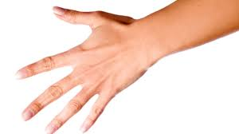

Your body is more than what you see when you look in the mirror – there aredifferent parts that have different jobs, but each part works together so you can eat, sleep, sit in class and play with friends.
Body part
head
hand
body
leg
fingers

1. You have five digits on each hand and each foot, making 10 fingers and 10 toes altogether.
2. Each bit of our body is made up from cells, which are the tiniest form of life
3. The parts of our body need blood in order to work properly – blood transports the nutrients each cell needs, and takes away any rubbish.
4. The heart keeps blood pumping throughout our body – the heart is one of our vital organs, which means it helps keep us alive.
5. Parts of your arm include your hand, wrist and elbow.
6. Parts of your leg include your foot, ankle, shin and thigh.
7. The parts of your body that help your arms twist around are called shoulders
8. Your neck allows your head to move from side to side, so you can turn your face to look at something.
9. Your stomach sits inside your body, just below your chest and lungs, and above your intestines.
10. Parts of your face include your forehead, eyes, cheeks, ears, nose and mouth.

.jpg)
.jpg)
.jpg)